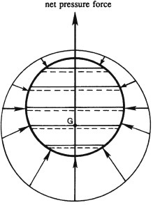

For a barotropic fluid , the first term on the right side of the equation above is zero because \(C\) is a closed contour, and \(\rho\) and \(p\) are single valued at each point in space. Similarly, the second integral on the right side is zero since \(\Phi\) is also single valued at each point in space.
Now consider the second term on the right side resulting from time differentiating the definition of the circulation. The velocity at point \(\mathbf{x} + d\mathbf{x}\) on \(C\) is:
\(\boxed{
\mathbf{u} + d\mathbf{u} = \frac{D}{Dt} (\mathbf{x} + d\mathbf{x}) = \frac{D\mathbf{x}}{Dt} + \frac{D}{Dt} (d\mathbf{x}), \quad \text{so} \quad d\mathbf{u}_i = \frac{D}{Dt} (dx_i)}
\)
Thus, the last term then becomes:
\(\boxed{
\oint_C u_i \frac{D}{Dt} (dx_i) = \oint_C u_i \, du_i = \oint_C d \left( \frac{1}{2} u_i^2 \right) = 0}
\)
where the final equality again follows because \(C\) is a closed contour and \(\mathbf{u}\) is a single-valued vector function, the expression obtained by time differentiating the definition of the circulation simplifies to:
$$
\frac{D\Gamma}{Dt} = \oint_C \left( \frac{1}{\rho} \frac{\partial \tau_{ij}}{\partial x_j} \right) dx_i
$$
and Kelvin’s theorem \(\frac{D\Gamma}{Dt} = 0\) is proved when the fluid is inviscid (\(\mu = \mu_v = 0\)) or when the integrated viscous force \((\partial \tau_{ij} / \partial x_j)\) is zero around the contour \(C\). This latter condition can occur when \(C\) lies entirely in irrotational fluid.